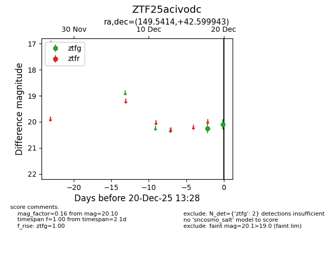
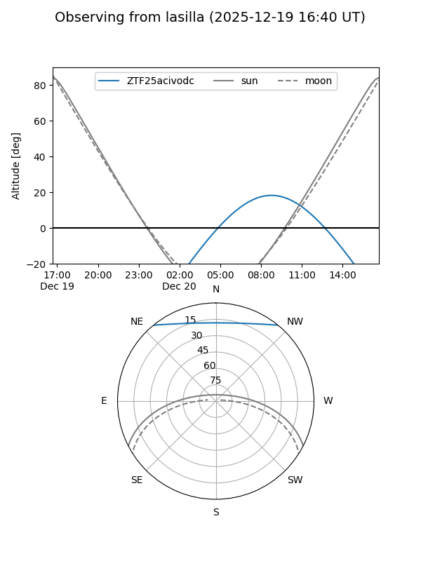

ZTF25acivodc
Target ZTF25acivodc at 2025-12-18 13:27
Aliases and brokers:
FINK: fink-portal.org/ZTF25acivodc
Lasair: lasair-ztf.lsst.ac.uk/objects/ZTF25acivodc
ALeRCE: alerce.online/object/ZTF25acivodc
alt names
ZTF25acivodc (ztf,fink_ztf)
Coordinates:
equatorial (ra, dec) = 149.5414,+42.59994
equatorial (HMS+DMS) = 09:58:09.92,+42:35:59.79
galactic (l, b) = (177.5829,+51.74651)
Photometry
last ztfg=20.25
1 ztfg detections
Lightcurve

Visibility


Additional plots